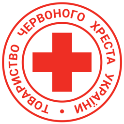

3D недоступне у цьому браузері.Досліджуй презентацію через кнопки та каталог.
Натискай на 3D-об’єкти чи їхні підписи. Клікер-презентер працює як клавіатура: кнопка «далі», що передає Page Down, → або пробіл, виконує ту саму дію. На телефоні можна гортати горизонтальним свайпом по вільному місцю сцени.
Відділ протимінної діяльності Харківської обласної організації ТЧХУ допомагає людям розуміти ризики та діяти безпечніше.
Можливі напрями участі: спілкування, організація, фото й дизайн, освітня робота після підготовки. Конкретні завдання обговорюємо разом.
Підійди до команди після виступу. Для інтерактивної презентації увімкни JavaScript.